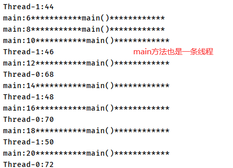

课程：宋红康 JAVA
基本概念
程序、进程与线程
程序(program)是为完成特定任务、用某种语言编写的一组指令的集合。即指一段静态的代码，静态对象。
**进程(process)**是程序的一次执行过程，或是正在运行的一个程序。是一个动态的过程：有它自身的产生、存在和消亡的过程。——生命周期
- 如:运行中的 QQ，运行中的 MP3 播放器
- 程序是静态的，进程是动态的
- 进程作为资源分配的单位，系统在运行时会为每个进程分配不同的内存区域
**线程(thread)**，进程可进一步细化为线程，是一个程序内部的一条执行路径。
- 若一个进程同一时间并行执行多个线程，就是支持多线程的
- 线程作为调度和执行的单位，每个线程拥有独立的运行栈和程序计数器(pc)，线程切换的开销小
- 一个进程中的多个线程共享相同的内存单元/内存地址空间→ 它们从同一堆中分配对象，可以，访问相同的变量和对象。这就使得线程间通信更简便、高效。但多个线程操作共享的系统资源可能就会带来安全的隐患。
单核 CPU 和多核 CPU 的理解
单核 CPU，其实是一种假的多线程，因为在一个时间单元内，也只能执行一个线程的任务。例如:虽然有多车道，但是收费站只有一个工作人员在收费，只有收了费才能通过，那么 CPU 就好比收费人员。如果有某个人不想交钱，那么收费人员可以把他“挂起”(晾着他，等他想通了，准备好了钱，再去收费)。但是因为 CPU 时间单元特别短，因此感觉不出来。
如果是多核的话，才能更好的发挥多线程的效率。 (现在的服务器都是多核的)
一个 Java 应用 程序 java.exe，其实至少有三个线程: main()主线程，gc()垃圾回收线程，异常处理线程。当然如果发生异常，会影响主线程。
并行与并发
- 并行：多个 CPU 同时执行多个任务。比如:多个人同时做不同的事。
- 并发：一个 CPU(采用时间片)同时执行多个任务。比如:秒杀、多个人做同一件事。
使用多线程的优点
- 提高应用程序的响应。对图形化界面更有意义，可增强用户体验。
- 提高计算机系统 CPU 的利用率
- 改善程序结构。将既长又复杂的进程分为多个线程，独立运行，利于理解和修改
何时需要多线程
- 程序需要同时执行两个或多个任务。
- 程序需要实现一些需要等待的任务时，如用户输入、文件读写操作、网络操作、搜索等。
- 需要一些后台运行的程序时。
线程的创建和使用
举例：
public class Sample {
public void method1(String str) {
System.out.println(str);
}
public void method2 (String str){
method1(str);
}
public static void main (String[]args){
Sample S = new Sample();
S.method2("hel1o!");
}
}
上面是多线程么？不是
如何判断？是否可以通过一条线把执行路径画出来
main—>method2 —> method1
上面的执行路径只有一条线，说明只有一条线程
Thread 类
- Java 语言的 JVM 允许程序运行多个线程，它通过
java.lang.Thread类来体现。 - Thread 类的特性
- 每个线程都是通过某个特定 Thread 对象的**run()方法来完成操作的，经常把run()**方法的主体称为线程体
- 通过该 Thread 对象的**start()**方法来启动这个线程，而非直接调用 run()
- 构造器
Thread()：创建新的 Thread 对象Thread(String threadname)：创建线程并指定线程实例名Thread(Runnable target)：指定创建线程的目标对象，它实现了 Runnable 接口中的 run 方法Thread(Runnable target,String name)：创建新的 Thread 对象
创建线程的方式一：继承 Thread 类
创建一个继承于 Thread 类的子类
重写 Thread 类的 run() –>将此线程执行的操作声明在 run()中
创建 Thread 类的子类的对象
通过此对象调用 start()
// public class Thread implements Runnable {//} /* @FunctionalInterface public interface Runnable { public abstract void run(); } */ //1. 创建一个继承于 Thread 类的子类 class MyThread extends Thread { //2. 重写 Thread 类的 run() @Override public void run() { for (int i = 0; i < 100; i++) { if(i % 2 == 0){ System.out.println(Thread.currentThread().getName() + ":" + i); } } } } public class ThreadTest { public static void main(String[] args) { //3. 创建 Thread 类的子类的对象 MyThread t1 = new MyThread(); //4.通过此对象调用start():①启动当前线程 ② 调用当前线程的run() t1.start(); //问题一：我们不能通过直接调用run()的方式启动线程。 // t1.run(); //问题二：再启动一个线程，遍历100以内的偶数。不可以还让已经start()的线程去执行。会报IllegalThreadStateException // t1.start(); //我们需要重新创建一个线程的对象 MyThread t2 = new MyThread(); t2.start(); //如下操作仍然是在main线程中执行的。 for (int i = 0; i < 100; i++) { if(i % 2 == 0){ System.out.println(Thread.currentThread().getName() + ":" + i + "***********main()************"); } } } }【结果：】
上面代码一共有三个线程：
简化代码：用匿名子类
public class ThreadDemo {
public static void main(String[] args) {
//创建Thread类的匿名子类的方式
new Thread(){
@Override
public void run() {
for (int i = 0; i < 100; i++) {
if(i % 2 == 0){
System.out.println(Thread.currentThread().getName() + ":" + i);
}
}
}
}.start();
new Thread(){
@Override
public void run() {
for (int i = 0; i < 100; i++) {
if(i % 2 != 0){
System.out.println(Thread.currentThread().getName() + ":" + i);
}
}
}
}.start();
}
}
Thread 中的常用方法：
start():启动当前线程；调用当前线程的 run()run():通常需要重写 Thread 类中的此方法，将创建的线程要执行的操作声明在此方法中currentThread():静态方法，返回执行当前代码的线程getName():获取当前线程的名字setName():设置当前线程的名字yield():释放当前 cpu 的执行权join():在线程 a 中调用线程 b 的 join()，此时线程 a 就进入阻塞状态，直到线程 b 完全执行完以后，线程 a 才结束阻塞状态。stop():已过时。当执行此方法时，强制结束当前线程。sleep(long millitime):让当前线程“睡眠”指定的 millitime 毫秒。在指定的 millitime 毫秒时间内，当前线程是阻塞状态。isAlive():判断当前线程是否存活
线程的调度与线程优先级
线程调度策略
时间片策略：默认，一段时间执行 A 线程，一段时间执行 B 线程
抢占式策略：高优先级的线程抢占 CPU 的概率更大
Java 的调度方法
同优先级线程组成先进先出队列(先到先服务)，使用时间片策略
对高优先级，使用优先调度的抢占式策略
线程的优先级
线程的优先级等级
MAX_PRIORITY：10
MIN _PRIORITY：1
NORM_PRIORITY：5 –>默认优先级
如何获取和设置当前线程的优先级：
getPriority():获取线程的优先级setPriority(int p):设置线程的优先级
说明：
高优先级的线程要抢占低优先级线程 cpu 的执行权。但是只是从概率上讲，高优先级的线程高概率的情况下被执行。并不意味着只有当高优先级的线程执行完以后，低优先级的线程才执行。线程创建时继承父线程的优先级
class HelloThread extends Thread{
@Override
public void run() {
for (int i = 0; i < 100; i++) {
if(i % 2 == 0){
try {
sleep(10);
} catch (InterruptedException e) {
e.printStackTrace();
}
System.out.println(Thread.currentThread().getName() + ":" + Thread.currentThread().getPriority() + ":" + i);
}
if(i % 20 == 0){
yield();// yield():释放当前cpu的执行权
}
}
}
public HelloThread(String name){
super(name);
}
}
public class ThreadMethodTest {
public static void main(String[] args) {
HelloThread h1 = new HelloThread("Thread：1");
h1.setName("线程一");
//设置分线程的优先级
h1.setPriority(Thread.MAX_PRIORITY);
h1.start();
//给主线程命名
Thread.currentThread().setName("主线程");
Thread.currentThread().setPriority(Thread.MIN_PRIORITY);
for (int i = 0; i < 100; i++) {
if(i % 2 == 0){
System.out.println(Thread.currentThread().getName() + ":" + Thread.currentThread().getPriority() + ":" + i);
}
if(i == 20){
try {
// join():在线程a中调用线程b的join(),此时线程a就进入阻塞状态，
// 直到线程b完全执行完以后，线程a才结束阻塞状态。
h1.join();
} catch (InterruptedException e) {
e.printStackTrace();
}
}
}
System.out.println(h1.isAlive());//false
}
}
创建线程的方式二：实现 Runnable 接口
- 创建一个实现了 Runnable 接口的类
- 实现类去实现 Runnable 中的抽象方法：run()
- 创建实现类的对象
- 将此对象作为参数传递到 Thread 类的构造器中，创建 Thread 类的对象
- 通过 Thread 类的对象调用 start()
class MThread implements Runnable{
//2. 实现类去实现Runnable中的抽象方法：run()
@Override
public void run() {
for (int i = 0; i < 100; i++) {
if(i % 2 == 0){
System.out.println(Thread.currentThread().getName() + ":" + i);
}
}
}
}
public class ThreadTest1 {
public static void main(String[] args) {
//3. 创建实现类的对象
MThread mThread = new MThread();
//4. 将此对象作为参数传递到Thread类的构造器中，创建Thread类的对象
Thread t1 = new Thread(mThread);
t1.setName("线程1");
//5. 通过Thread类的对象调用start():① 启动线程 ②调用当前线程的run()-->调用了Runnable类型的target的run()
t1.start();
//再启动一个线程，遍历100以内的偶数
Thread t2 = new Thread(mThread);
t2.setName("线程2");
t2.start();
}
}
将 MThread 作为参数传递到 Thread 类的构造器中会发生什么
比较创建线程的两种方式
开发中：优先选择：实现 Runnable 接口的方式
原因：
- 实现的方式没有类的单继承性的局限性
- 实现的方式更适合来处理多个线程有共享数据的情况。
class Window extends Thread{ //需要通过static来实现数据共享 private static int ticket = 100; @Override public void run() { while(true){ if(ticket > 0){ System.out.println(getName() + "：卖票，票号为：" + ticket); ticket--; }else{ break; } } } } public class WindowTest { public static void main(String[] args) { Window t1 = new Window(); Window t2 = new Window(); Window t3 = new Window(); t1.setName("窗口1"); t2.setName("窗口2"); t3.setName("窗口3"); t1.start(); t2.start(); t3.start(); } } /*****************************************************************************/ class Window1 implements Runnable{ private int ticket = 100; @Override public void run() { while(true){ if(ticket > 0){ System.out.println(Thread.currentThread().getName() + ":卖票，票号为：" + ticket); ticket--; }else{ break; } } } } public class WindowTest1 { public static void main(String[] args) { Window1 w = new Window1(); Thread t1 = new Thread(w); Thread t2 = new Thread(w); Thread t3 = new Thread(w); t1.setName("窗口1"); t2.setName("窗口2"); t3.setName("窗口3"); t1.start(); t2.start(); t3.start(); } }联系：public class Thread implements Runnable
相同点：两种方式都需要重写 run(),将线程要执行的逻辑声明在 run()中
JDK5.0 新增线程创建方式一：实现 Callable 接口
- 创建一个实现 Callable 的实现类
- 实现 call 方法，将此线程需要执行的操作声明在 call()中
- 创建 Callable 接口实现类的对象
- 将此 Callable 接口实现类的对象作为传递到 FutureTask 构造器中，创建 FutureTask 的对象。
- 将 FutureTask 的对象作为参数传递到 Thread 类的构造器中，创建 Thread 对象，并调用 start()
- 获取 Callable 中 call 方法的返回值
//1.创建一个实现Callable的实现类
class NumThread implements Callable {
//2.实现call方法，将此线程需要执行的操作声明在call()中
@Override
public Object call() throws Exception {//可以抛异常
int sum = 0;
for (int i = 1; i <= 100; i++) {
if(i % 2 == 0){
System.out.println(i);
sum += i;
}
}
return sum;
}
}
public class ThreadNew {
public static void main(String[] args) {
//3.创建Callable接口实现类的对象
NumThread numThread = new NumThread();
//4.将此Callable接口实现类的对象作为传递到FutureTask构造器中，创建FutureTask的对象
FutureTask futureTask = new FutureTask(numThread);
//5.将FutureTask的对象作为参数传递到Thread类的构造器中，创建Thread对象，并调用start()
new Thread(futureTask).start();
try {
//6.获取Callable中call方法的返回值
//get()返回值即为FutureTask构造器参数Callable实现类重写的call()的返回值。
Object sum = futureTask.get();
System.out.println("总和为：" + sum);
} catch (InterruptedException e) {
e.printStackTrace();
} catch (ExecutionException e) {
e.printStackTrace();
}
}
}
如何理解实现 Callable 接口的方式创建多线程比实现 Runnable 接口创建多线程方式强大？
call()可以有返回值的。call()可以抛出异常，被外面的操作捕获，获取异常的信息Callable是支持泛型的
JDK5.0 新增线程创建方式二：使用线程池
- 背景:经常创建和销毁、使用量特别大的资源，比如并发情况下的线程，对性能影响很大。
- 思路：提前创建好多个线程，放入线程池中，使用时直接获取，使用完放回池中。可以避免频繁创建销毁、实现重复利用。类似生活中的公共交通工具。
- 好处：
- 提高响应速度(减少了创建新线程的时间)
- 降低资源消耗(重复利用线程池中线程，不需要每次都创建)
- 便于线程管理
- corePoolSize：核心池的大小
- maximumPoolSize：最大线程数
- keepAliveTime：线程没有任务时最多保持多长时间后会终止
- 线程池相关 API
- JDK 5.0 起提供了线程池相关 API:
ExecutorService和Executors ExecutorService:真正的线程池接口。常见子类ThreadPoolExecutorvoid execute(Runnable command):执行任务/命令，没有返回值，一般用来执行Runnable<T> Future<T>submit(Callable<T> task): 执行任务，有返回值，一般用来执行Callablevoid shutdown():关闭连接池
Executors：工具类、线程池的工厂类，用于创建并返回不同类型的线程池Executors.newCachedThreadPool()：创建一个可根据需要创建新线程的线程池。Executors.newFixedThreadPool(n)：创建一个可重用固定线程数的线程池。Executors.newSingleThreadExecutor()：创建一个只有一个线程的线程池。Executors.newScheduledThreadPool(n)：创建一个线程池，它可安排在给定延迟后运行命令或者定期地执行。
- JDK 5.0 起提供了线程池相关 API:
class NumberThread implements Runnable{
@Override
public void run() {
for(int i = 0;i <= 100;i++){
if(i % 2 == 0){
try {
Thread.sleep(1);
} catch (InterruptedException e) {
e.printStackTrace();
}
System.out.println(Thread.currentThread().getName() + ": " + i);
}
}
}
}
class NumberThread1 implements Runnable{
@Override
public void run() {
for(int i = 0;i <= 100;i++){
if(i % 2 != 0){
try {
Thread.sleep(1);
} catch (InterruptedException e) {
e.printStackTrace();
}
System.out.println(Thread.currentThread().getName() + ": " + i);
}
}
}
}
public class ThreadPool {
public static void main(String[] args) {
//1. 提供指定线程数量的线程池
ExecutorService service = Executors.newFixedThreadPool(10);
//ExecutorService没有线程池的属性，它的实现类ThreadPoolExecutor有，所以强转
//public class ThreadPoolExecutor extends AbstractExecutorService
//public abstract class AbstractExecutorService implements ExecutorService
/* ThreadPoolExecutor service1 和 ExecutorService service 是同一个对象 */
ThreadPoolExecutor service1 = (ThreadPoolExecutor) service;
//设置线程池的属性
// ExecutorService service = new 实现类--->service.getClass()可以取得真正运行的类的名字
// System.out.println(service.getClass());
service1.setCorePoolSize(15);
//service1.setKeepAliveTime();
//2.执行指定的线程的操作。需要提供实现Runnable接口或Callable接口实现类的对象
service.execute(new NumberThread());//适合适用于Runnable
service.execute(new NumberThread1());//适合适用于Runnable
//service.submit(Callable callable);//适合使用于Callable
//3.关闭连接池
service.shutdown();
}
}
线程的分类
Java 中的线程分为两类：一种是守护线程，一种是用户线程。
- 它们在几乎每个方面都是相同的，唯一的区别是判断 JVM 何时离开。
- 守护线程是用来服务用户线程的，通过在
start()方法前调用thread.setDaemon(true)可以把-一个用户线程变成一个守护线程。 - Java 垃圾回收就是一个典型的守护线程。
- 若 JVM 中都是守护线程，当前 JVM 将退出。
- 形象理解：兔死狗烹，鸟尽弓藏
线程的生命周期
要想实现多线程，必须在主线程中创建新的线程对象。Java 语言使用 Thread 类及其子类的对象来表示线程，在它的一个完整的生命周期中通常要经历如下的五种状态:
- 新建：当一个 Thread 类或 其子类的对象被声明并创建时，新生的线程对象处于新建状态
- 就绪：处于新建状态的线程被 start()后，将进入线程队列等待 CPU 时间片，此时它已具备了运行的条件，只是没分配到 CPU 资源
- 运行：当就绪的线程被调度并获得 CPU 资源时,便进入运行状态，run()方法定义了线程的操作和功能
- 阻塞：在某种特殊情况下，被人为挂起或执行输入输出操作时，让出 CPU 并临时中止自己的执行，进入阻塞状态
- 死亡：线程完成了它的全部工作或线程被提前强制性地中止或出现异常导致结束
线程的同步
问题引入：
- 问题：在之前买票的案例中，出现了重票、错票 –>出现了线程的安全问题
- 问题出现的原因：当某个线程操作车票的过程中，尚未操作完成时，其他线程参与进来，也操作车票。
- 如何解决：当一个线程 a 在操作 ticket 的时候，其他线程不能参与进来。直到线程 a 操作完 ticket 时，其他线程才可以开始操作 ticket。这种情况即使线程 a 出现了阻塞，也不能被改变。
方式一：通过同步代码块解决线程安全问题
synchronized(同步监视器){
//需要被同步的代码
}
操作共享数据的代码，即为需要被同步的代码。 –>不能包含代码多了，也不能包含代码少了。
共享数据：多个线程共同操作的变量。比如：ticket 就是共享数据。
同步监视器，俗称：锁。任何一个类的对象，都可以充当锁。
要求：多个线程必须要共用同一把锁。
使用同步代码块解决实现 Runnable 接口的方式的线程安全问题
class Window1 implements Runnable{ private int ticket = 10; // Object obj = new Object(); // Dog dog = new Dog();//这在Window1对象里面也是唯一的 @Override public void run() { //Object obj = new Object();//这个不可以，不是多个线程公用一把锁 while(true){ synchronized (this){//此时的this:唯一的Window1的对象 //方式二：synchronized (dog) { if (ticket > 0) { try { Thread.sleep(1000); } catch (InterruptedException e) { e.printStackTrace(); } ticket--; System.out.println(Thread.currentThread().getName() + ":卖票，票号为：" + ticket); } else { break; } } } } } public class WindowTest1 { public static void main(String[] args) { Window1 w = new Window1(); Thread t1 = new Thread(w); Thread t2 = new Thread(w); Thread t3 = new Thread(w); t1.setName("窗口1"); t2.setName("窗口2"); t3.setName("窗口3"); t1.start(); t2.start(); t3.start(); } } class Dog{ }使用同步代码块解决继承 Thread 类的方式的线程安全问题
class Window2 extends Thread{ private static int ticket = 10; //用static修饰，让多个线程共享一把锁 private static Object obj = new Object(); @Override public void run() { while(true){ //正确的 // synchronized (obj){ synchronized (Window2.class){ //Class clazz = Window2.class,Window2.class只会加载一次(类对象只会加载一次) //错误的方式：this代表着t1,t2,t3三个对象 // synchronized (this){ if(ticket > 0){ try { Thread.sleep(1000); } catch (InterruptedException e) { e.printStackTrace(); } ticket--; System.out.println(getName() + "：卖票，票号为：" + ticket); }else{ break; } } } } } public class WindowTest2 { public static void main(String[] args) { Window2 t1 = new Window2(); Window2 t2 = new Window2(); Window2 t3 = new Window2(); t1.setName("窗口1"); t2.setName("窗口2"); t3.setName("窗口3"); t1.start(); t2.start(); t3.start(); } }
方式二：通过同步方法解决线程安全问题
语法：权限修饰符 synchronized 返回值类型 方法名（ 形参列表 ）{ 方法体 }
同步方法仍然涉及到同步监视器，只是不需要我们显式的声明。
- 非静态的同步方法，同步监视器是：this
- 静态的同步方法，同步监视器是：当前类本身
使用同步方法解决实现 Runnable 接口的方式的线程安全问题
class Window3 implements Runnable { private int ticket = 100; @Override public void run() { while (true) { show(); } } private synchronized void show(){//同步监视器：this //synchronized (this){ if (ticket > 0) { try { Thread.sleep(100); } catch (InterruptedException e) { e.printStackTrace(); } System.out.println(Thread.currentThread().getName() + ":卖票，票号为：" + ticket); ticket--; } //} } } public class WindowTest3 { public static void main(String[] args) { Window3 w = new Window3(); Thread t1 = new Thread(w); Thread t2 = new Thread(w); Thread t3 = new Thread(w); t1.setName("窗口1"); t2.setName("窗口2"); t3.setName("窗口3"); t1.start(); t2.start(); t3.start(); } }使用同步方法解决继承 Thread 类的方式的线程安全问题
class Window4 extends Thread { private static int ticket = 100; @Override public void run() { while (true) { show(); } } private static synchronized void show(){//同步监视器：Window4.class //private synchronized void show(){ //同步监视器：this ---> t1,t2,t3。此种解决方式是错误的 if (ticket > 0) { try { Thread.sleep(100); } catch (InterruptedException e) { e.printStackTrace(); } System.out.println(Thread.currentThread().getName() + "：卖票，票号为：" + ticket); ticket--; } } } public class WindowTest4 { public static void main(String[] args) { Window4 t1 = new Window4(); Window4 t2 = new Window4(); Window4 t3 = new Window4(); t1.setName("窗口1"); t2.setName("窗口2"); t3.setName("窗口3"); t1.start(); t2.start(); t3.start(); } }
释放锁的操作
- 当前线程的同步代码块、同步方法执行结束。
- 当前线程在同步代码块、同步方法中遇到break、return终止了该代码块、该方法的继续执行。
- 当前线程在同步代码块、同步方法中出现了未处理的Error或Exception，导致异常结束。
- 当前线程在同步代码块、同步方法中执行了线程对象的**wait()**方法，当前线程暂停，并释放锁。
不会释放锁的操作
线程执行同步代码块或同步方法时，程序调用**Thread.sleep()、Thread.yield()**方法暂停当前线程的执行
线程执行同步代码块时，其他线程调用了该线程的**suspend()**方法将该线程挂起，该线程不会释放锁(同步监视器)
应尽量避免使用 suspend()和 resume()来控制线程
死锁问题
死锁的理解：不同的线程分别占用对方需要的同步资源不放弃，都在等待对方放弃自己需要的同步资源，就形成了线程的死锁
死锁的代码演示
同步代码块
public class ThreadTest { public static void main(String[] args) { StringBuffer s1 = new StringBuffer(); StringBuffer s2 = new StringBuffer(); new Thread(){ @Override public void run() { synchronized (s1){ s1.append("a"); s2.append("1"); try { // 不释放 s1 Thread.sleep(100); } catch (InterruptedException e) { e.printStackTrace(); } // 等着 s2的锁; 但是代码还没执行完，无法释放s1 synchronized (s2){ s1.append("b"); s2.append("2"); System.out.println(s1); System.out.println(s2); } } } }.start(); new Thread(new Runnable() { @Override public void run() { synchronized (s2){ s1.append("c"); s2.append("3"); try { // 不释放 s2 Thread.sleep(100); } catch (InterruptedException e) { e.printStackTrace(); } //等着 s1的锁; 但是代码还没执行完，无法释放s2 synchronized (s1){ s1.append("d"); s2.append("4"); System.out.println(s1); System.out.println(s2); } } } }).start(); } }同步方法
class A { public synchronized void foo(B b) { //同步监视器：A类的对象：a System.out.println("当前线程名: " + Thread.currentThread().getName() + " 进入了A实例的foo方法"); // ① try { Thread.sleep(200); } catch (InterruptedException ex) { ex.printStackTrace(); } System.out.println("当前线程名: " + Thread.currentThread().getName() + " 企图调用B实例的last方法"); // ③ // 拿着A的锁，调用B对象的last方法需要拿到B的锁 b.last(); } public synchronized void last() {//同步监视器：A类的对象：a System.out.println("进入了A类的last方法内部"); } } class B { public synchronized void bar(A a) {//同步监视器：b System.out.println("当前线程名: " + Thread.currentThread().getName() + " 进入了B实例的bar方法"); // ② try { Thread.sleep(200); } catch (InterruptedException ex) { ex.printStackTrace(); } System.out.println("当前线程名: " + Thread.currentThread().getName() + " 企图调用A实例的last方法"); // ④ // 拿着B的锁，调用B对象的last方法需要拿到A的锁 a.last(); } public synchronized void last() {//同步监视器：b System.out.println("进入了B类的last方法内部"); } } public class DeadLock implements Runnable { A a = new A(); B b = new B(); public void init() { Thread.currentThread().setName("主线程"); // 调用a对象的foo方法 a.foo(b); System.out.println("进入了主线程之后"); } public void run() { Thread.currentThread().setName("副线程"); // 调用b对象的bar方法 b.bar(a); System.out.println("进入了副线程之后"); } public static void main(String[] args) { DeadLock dl = new DeadLock(); new Thread(dl).start(); dl.init(); } } /* 结果： 当前线程名: 主线程 进入了A实例的foo方法 当前线程名: 副线程 进入了B实例的bar方法 当前线程名: 副线程 企图调用A实例的last方法 当前线程名: 主线程 企图调用B实例的last方法 */
Lock 锁
- 从 JDK5.0 开始，Java 提供了更强大的线程同步机制一通过显式定义同步锁对象来实现同步。同步锁使用 Lock 对象充当。
java.util.concurrent.locks.Lock接口是控制多个线程对共享资源进行访问的工具。锁提供了对共享资源的独占访问，每次只能有一个线程对 Lock 对象加锁，线程开始访问共享资源之前应先获得 Lock 对象。ReentrantLock类实现了Lock, 它拥有与synchronized相同的并发性和内存语义，在实现线程安全的控制中，比较常用的是ReentrantLock，可以显式加锁、释放锁。- synchronized 与 Lock 的异同
- 相同：二者都可以解决线程安全问题
- 不同点：
- Lock 是显式锁(手动开启和关闭锁，别忘记关闭锁)，synchronized 是隐式锁，出了作用域自动释放
- Lock 只有代码块锁，synchronized 有代码块锁和方法锁
- 使用 Lock 锁，JVM 将花费较少的时间来调度线程，性能更好。并且具有更好的扩展性(提供更多的子类)
- 优先使用顺序：Lock→ 同步代码块(已经进入了方法体，分配了相应资源)→ 同步方法(在方法体之外)
class Window implements Runnable{
private int ticket = 10;
//1.实例化ReentrantLock
private ReentrantLock lock = new ReentrantLock();
@Override
public void run() {
while(true){
try{
//2.调用锁定方法lock()
lock.lock();
if(ticket > 0){
try {
Thread.sleep(1000);
} catch (InterruptedException e) {
e.printStackTrace();
}
ticket--;
System.out.println(Thread.currentThread().getName() + "：售票，票号为：" + ticket);
}else{
break;
}
}finally {
//3.调用解锁方法：unlock()
lock.unlock();
}
}
}
}
public class LockTest {
public static void main(String[] args) {
Window w = new Window();
Thread t1 = new Thread(w);
Thread t2 = new Thread(w);
Thread t3 = new Thread(w);
t1.setName("窗口1");
t2.setName("窗口2");
t3.setName("窗口3");
t1.start();
t2.start();
t3.start();
}
}
synchronized与 Lock的异同
相同：二者都可以解决线程安全问题
不同点：
- Lock是显式锁( 手动开启和关闭锁，别忘记关闭锁)，synchronized是隐式锁，出了作用域自动释放
- Lock只有代码块锁，synchronized有 代码块锁和方法锁
- 使用Lock锁，JVM将花费较少的时间来调度线程，性能更好。并且具有更好的扩展性(提供更多的子类)
优先使用顺序：Lock→同步代码块(已经进入了方法体，分配了相应资源)→同步方法(在方法体之外)
线程的通信
为什么要线程通信
多个线程在处理同一个资源，但是处理的动作（线程的任务）却不相同。而多个线程并发执行时,在默认情况下 CPU 是随机切换线程的，当我们需要多个线程来共同完成一件任务，并且我们希望他们有规律的执行,那么多线程之间需要一些通信机制，可以协调它们的工作，以此来帮我们达到多线程共同操作一份数据。如果 B 线程必须等到 A 线程完成后才能执行，那么线程 A 与线程 B 之间就需要线程通信，即等待唤醒机制。
如何实现线程之间的通信：
wait()：一旦执行此方法，当前线程就进入阻塞状态，并释放同步监视器。notify()：一旦执行此方法，就会唤醒被 wait 的一个线程。如果有多个线程被 wait，就唤醒优先级高的那个。notifyAll()：一旦执行此方法，就会唤醒所有被 wait 的线程。举例：使用两个线程打印 1-100。线程 1, 线程 2 交替打印
class Number implements Runnable{ private int number = 1; private Object obj = new Object(); @Override public void run() { while(true){ synchronized (obj) { // 一旦执行此方法，就会唤醒被wait的一个线程。如果有多个线程被wait，就唤醒优先级高的那个。 obj.notify(); if(number <= 100){ try { Thread.sleep(10); } catch (InterruptedException e) { e.printStackTrace(); } System.out.println(Thread.currentThread().getName() + ":" + number); number++; try { //使得调用如下wait()方法的线程进入阻塞状态并且释放锁（obj） obj.wait(); } catch (InterruptedException e) { e.printStackTrace(); } }else{ break; } } } } } public class CommunicationTest { public static void main(String[] args) { Number number = new Number(); Thread t1 = new Thread(number); Thread t2 = new Thread(number); t1.setName("线程1"); t2.setName("线程2"); t1.start(); t2.start(); } }- wait()，notify()，notifyAll()三个方法必须使用在同步代码块或同步方法中。
- wait()，notify()，notifyAll()三个方法的调用者必须是同步代码块或同步方法中的同步监视器。否则，会出现 IllegalMonitorStateException 异常
- wait()，notify()，notifyAll()三个方法是定义在java.lang.Object类中。
sleep() 和 wait()的异同
- 相同点：一旦执行方法，都可以使得当前的线程进入阻塞状态。
- 不同点：
- 两个方法声明的位置不同：Thread 类中声明 sleep() ,Object 类中声明 wait()
- 调用的要求不同：sleep()可以在任何需要的场景下调用。wait()必须使用在同步代码块或同步方法中
- 关于是否释放同步监视器：如果两个方法都使用在同步代码块或同步方法中，sleep()不会释放锁，wait()会释放锁。
经典例题：生产者/消费者问题
生产者(Productor)将产品交给店员(Clerk)，而消费者(Customer)从店员处取走产品，店员一次只能持有固定数量的产品(比如:20)，如果生产者试图生产更多的产品，店员会叫生产者停一下，如果店中有空位放产品了再通知生产者继续生产;如果店中没有产品了，店员会告诉消费者等一下，如果店中有产品了再通知消费者来取走产品。
public class ProductTest {
public static void main(String[] args) {
Clerk clerk = new Clerk();
Producer p1 = new Producer(clerk);
p1.setName("生产者1");
Consumer c1 = new Consumer(clerk);
c1.setName("消费者1");
Consumer c2 = new Consumer(clerk);
c2.setName("消费者2");
p1.start();
c1.start();
c2.start();
}
}
class Clerk{
private int productCount = 0;//共同资源
//生产产品
public synchronized void produceProduct() {//锁是this
if(productCount < 20){
productCount++;
System.out.println(Thread.currentThread().getName() + ":开始生产第" + productCount + "个产品");
//唤醒
notify();
}else{
//等待
try {
wait();
} catch (InterruptedException e) {
e.printStackTrace();
}
}
}
//消费产品
public synchronized void consumeProduct() {//锁是this
if(productCount > 0){
System.out.println(Thread.currentThread().getName() + ":开始消费第" + productCount + "个产品");
productCount--;
notify();//唤醒
}else{
//等待
try {
wait();
} catch (InterruptedException e) {
e.printStackTrace();
}
}
}
}
class Producer extends Thread{//生产者
private Clerk clerk;
public Producer(Clerk clerk) {
this.clerk = clerk;
}
@Override
public void run() {
System.out.println(getName() + ":开始生产产品.....");
while(true){
try {
Thread.sleep(10);
} catch (InterruptedException e) {
e.printStackTrace();
}
clerk.produceProduct();
}
}
}
class Consumer extends Thread{//消费者
private Clerk clerk;
public Consumer(Clerk clerk) {
this.clerk = clerk;
}
@Override
public void run() {
System.out.println(getName() + ":开始消费产品.....");
while(true){
try {
Thread.sleep(20);
} catch (InterruptedException e) {
e.printStackTrace();
}
clerk.consumeProduct();
}
}
}
转载请注明来源，欢迎对文章中的引用来源进行考证，欢迎指出任何有错误或不够清晰的表达。可以在下面评论区评论，也可以邮件至 1909773034@qq.com